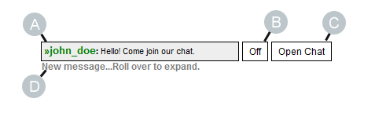
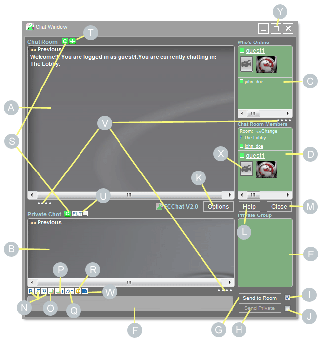
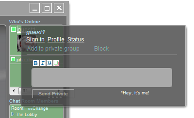
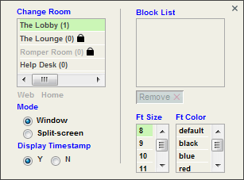
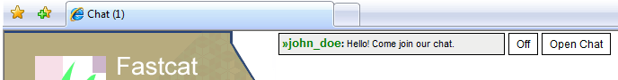
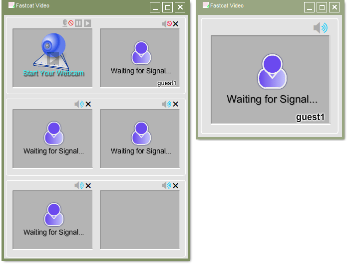
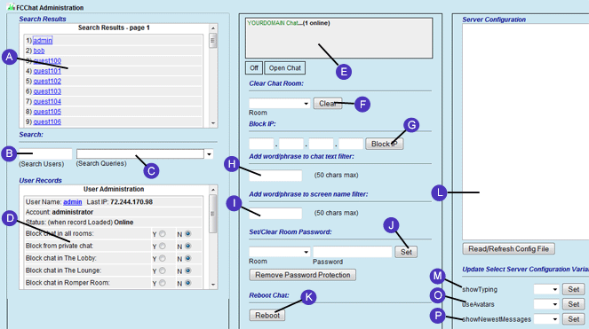

|
FCChat V2.x |
User Manual
1 User Guide
2 Administrator Guide
1 User Guide
|

|
1.1 System Requirements
You must have Flash player 8 or higher installed on your browser.
Javascript and Cookies must be enabled.
Fully Supported Browsers:
- Internet Explorer 6+
- Firefox 1.5+
- Opera 9+
- Google Chrome 3.0+
- Safari 3+
* Some of the features may not be available on browsers that are not fully supported.
1.2 FCChat Display

(A) Private Message Alert Box
(B) On/Off Button
(C) Open Chat Button
(D) New Message Indicator
1.2.1 On/Off Button
Use the on/off button to toggle the chat on or off. If you do not wish to use the chat it is probably best to leave it off. By turning it off, you make yourself invisible to other users. When the chat is on, your online presence is known to all other online users.
1.2.2 Signing in to the chat. (Without an external account)
If the chat has been configured to allow anonymous logins, you will be automatically assigned a guest account when you enter the web site. These accounts are named "guest1", "guest2", "guest3", etc. Thereafter, you may sign in under a different screen name by opening up the chat panel, clicking on your guest account name, and selecting "Sign in" from the user dialog box.
If the chat has not been configured to allow anonymous logins, you must sign in before entering the chat. To do this, simply click the "Open Chat" button"
When you sign in, you will be presented with a login dialog box which asks you to enter a screen name and a password. If this is your first time logging in, you may enter any name and password you desire, as long as that name has not already been taken by another user. Screen names and passwords may be between 3 and 15 characters long. Only letters, numbers and underscores are allowed. Your name and password will be stored so that the system will remember you whenever you return. Unfortunately, your password cannot be recovered if you forget it; however, you can always create another account. These accounts are not permanent and may deleted from time to time.
1.2.3 Signing in to the chat with your site account.
If the chat has been configured to work with external user accounts, you must first sign in or register with the site before you can enter the chat room. After logging in to the site, the chat will automatically recognize that you are signed in. Then you may use the 'Open Chat' button to enter a chat room.
1.2.4 Signing out.
To sign out of the chat, open the chat panel, click on your screen name, and then click on the "Sign out" link which appears in the user dialog box. If you are signed in with a site account, you must sign out of the site in order simultaneously sign out of the chat.
1.3 Chat Panel layout.
 The chat panel in window mode...
1.3.1 The chat room window (A). Conversations in this window are viewable by all room members. Room participants are listed in window D.
1.3.2 The private chat window. (B) In this window, you can carry on a private conversation with another online user. The private chat window also allows you to carry on multiple private chats at the same time.
1.3.3 The online user window. (C) This window has the title "Who's Connected', and lists all the users who are currently online and signed in to the chat system. It does not list users who have their chats turned off.
1.3.4 The chat room members window. (D) This window lists all the users that are currently chatting in the specified room. In the illustration above, both kobe and bob are currently chatting in the room 'The Lobby'. When you first open up the chat panel, you are assigned to the default room, which is chosen by the administrator. After that, you may change to any of the available rooms (See 1.6.1.1 View/Change Rooms.). When you close the chat panel, you are removed from the room list; however, you are still listed in the online user window, and may still receive private messages from other users.
1.3.5 The private group window. (E) The private group window was included to allow convenient access to users you wish to converse with privately. In order for a user to appear in this window, you must add them to your private group (See 1.5.1.2 Add/Remove a user from your private group.). You may add multiply users to your private group, but you may only chat with the user that is currently selected. A user is selected when they are highlighted in green, and have a little arrow by them. To select a user, simply hover over the desired user and click on their container.
1.3.6 The message text box. (F) This is where you type in your chats.
1.3.7 Send to Room button. (G) Sends the chat to the room you're currently in. Your chat message appears in window A.
1.3.8 Send Private button. (H) Sends the chat to the currently selected user. Your message will appear in that user's private group window, and in your private group window. If the recipient of your message has their chat panel closed, the message will still appear in their private message alert box (See 1.2 FCChat Display).
1.3.9 Send to room by default. (I) When this is checked, if you type a message and press the enter key, your message will be sent the chat room (window A) by default.
1.3.10 Send private by default. (J) When this is checked, if you type a message and press the enter key, your message will be sent the private chat (window B) by default.
1.3.11 Options Button. (K) Opens the options dialog box. (See 1.6.1 Options Dialog box)
1.3.12 Help Button. (L) Opens the help panel.
1.3.13 Close Button. (M) Closes the chat panel.
1.3.14 Text format icons. (N) Inserts bold, italic, or underlined text. Place the text you wish to format between the two tags.
eg. Entering "Hello, my name is =b= bob =b= " will be displayed as "Hello, my name is bob "
1.3.15 Insert image icon. (O) Inserts an image into your message. Place the image you wish to insert between the image tags.
eg. If you have an image named cat.jpg, insert it into your chat message like this: "Hello, this is my cat [[cat.jpg]]" (Of course, you will need to upload the image first. See 1.3.13 Upload image icon. (P)) Your chat message will be displayed as:
"Hello, this is my cat
cat "
1.3.16 Upload image icon. (P) Opens the upload image dialog box. Before you can share images in your messages, you need to upload them. You may upload images in the GIF, JPEG, and PNG formats only. The chat administrator may place restrictions on the size of images you may upload.
1.3.17 Create avatar icon. (Q) Opens the create avatar dialog box. From this dialog, you may choose from the selection of gallery avatars, or upload your own.
1.3.18 Add smiley icon. (R) Choose a smiley to add to your message.
1.3.19 Clear room. (S) Clears the current room. After clearing, you may still access the message history by clicking on 'Previous Messages'.
1.3.20 Turn room alerts on/off. (T) When room alerts are on, you will receive a notification, displayed in the chat room window, whenever someone enters or exits the room.
1.3.21 Filter private conversations. (U) When this icon is checked, only the private chats from the user selected in the private group window will be displayed. If no user is selected, all private messages will still be displayed.
1.3.22 Sliders. (V) Use these to resize the chat panel dimensions.
1.3.23 Video chat icon. (W) This button opens the video chat window.
1.3.24 Webcam icon. (X) Clicking on this icon allows you to view the person's webcam.
1.3.25 Maximize/Split-screen mode. (Y) Clicking the maximize window button sends the chat into the split screen mode (if enabled). The split-screen mode is discussed in 1.8 Chat Modes.
1.4 User's Chat Status
The little square to the left of each user's name displays the user's chat status according to the following legend:
1.5 User's Dialog Box
Click on any online* user's name and their dialog box will appear:
*Clicking on an offline user's name will bring up their profile
1.5.1 User Dialog box controls From the dialog box, you may perform the following functions.
1.5.1.1 Send a private message. Enter your message in the text box and press 'Send Private'.
1.5.1.2 Add/Remove a user from your private group. When this box is checked, the user will appear in your private group window. A newly added user automatically becomes actively selected.
1.5.1.3 Block/Unblock. When this box is checked, the user's link will change to red, indicating that they have been blocked. A blocked user is prohibited from sending you private messages. You, however, may still send private messages to them (unless, of course, they block you).
1.5.1.4 View profile. Clicking this link will bring up the user's profile page. If the chat panel is open, this page will appear in the chat room window.
1.5.1.5 View status. Clicking this link will bring up the user's current chat status. The status report will appear in your private group window. The status report states the user's current room, how long the user has been online, how long they have been idle, and shows any actions (room blocks, etc.) taken by moderators against this user.
1.5.1.6 Sign in. If you are logged in as a guest, your user dialog box will display a 'sign in' link. Select this link and you will be presented with a dialog box which asks you to enter a screen name and a password. If this is your first time logging in, you may enter any name and password you desire, as long as that name has not already been taken by another user. Screen names and passwords may be between 3 and 15 characters long. Only letters, numbers and underscores are allowed. Your name and password will be stored so that the system will remember you whenever you return. Unfortunately, your password cannot be recovered if you forget it; however, you can always create another account. These accounts are not permanent and may deleted from time to time.
1.5.1.7 Moderate. If you have administrator/moderator privileges, then your user dialog box will display a 'mod' link. Selecting this link will take you to the moderator control panel.
1.6 Options Dialog Box
To open the options box, click on the 'Options' button on the chat panel.
1.6.1 Options Dialog box controls From the options box, you may perform the following functions.
1.6.1.1 View/Change Rooms. The current room is highlighted in green. Simply click on a room to enter that room. The number to the right of each room represents the number of users currently chatting in it. If a room is locked, you must provide the correct password to enter it. If a room is grayed out/disabled it means that you are not allowed to enter. 1.6.1.2 Remove a user from the block list. Click on any user's name in the list and then press remove. 1.6.1.3 Change Mode. Toggle between the Window and Split-screen modes. (See 1.8 Chat Modes). 1.6.1.4 Display/Hide Timestamp. With this option, chats will appear with or without timestamp info.
1.6.1.5 Change Font Size/Color. Changes font display characteristics for greater accessibility.
1.6.1.6 Web/Home The web option is for use when you are in the Split-screen mode (See 1.8 Chat Modes). It allows you to navigate to a URL outside the current domain (google, for instance), while, at the same time, keeping you connected to the chat rooms. This feature must be enabled by the site administrator.
1.7 Private Message Notification
When new messages come in, they are displayed in the private message alert box. At the same time, the page title and tab title change to serve as a secondary notification. This can be especially useful if you use tabbed browsing. 
1.8 Chat Modes
The examples above demonstrate the main features of the chat in the Window mode. When in the Window mode, you may open and close the chat panel from any page in which the toolbar is displayed. If you would rather chat and surf the site simultaneously, there is an alternative, called Split-screen mode. To get to the Split-screen mode, click the maximize button at the top of the window, or open the options box and click on Mode:Split-screen. Then your chat layout will look something like this:  A view of the site in Split-screen mode. The right panel contains the chat system. From the left panel, you may navigate to any page in your domain. The sliders allow you to adjust the size and width of the two panels.
1.9 Video Chat
To access the video chat, click on the Video chat icon (1.3.19) above the message text box. To view another user's webcam, click on the Webcam icon (1.3.20) below their screen-name.  The video chat components. The window on the left is the video pool. The video pool window automatically resizes itself when you add or remove video screens. You may view a maximum of 5 other user's webcams. When you click on a user's video screen, you will open an expanded view of their webcam (the right window). The expanded view window is resizable.
|
|
2 Administrator Guide
|
|
2.5 FCChat Administration
FCChat comes with a built in administration panel. There are two levels of administrative privileges, administrators and moderators. Administrators are granted all moderation privileges and must be designated by the site administrator. Moderators are granted a limited set of privileges. An administrator promote a regular user to moderator status through the administration panel.
2.5.1 Getting to the Administration Panel.
Administrators and moderators gain access to the administration panel through their user dialog box. Open the chat panel and click on your screen name. If you have administrative privileges (ie. if the words <admin> or <mod> appear next to your screen name), you will see, in your user dialog box, a link that says 'mod'. Click on this link and you will be taken to the administration panel.
2.5.2 Administration Panel Layout.
A view of the administration panel. Click to enlarge
2.5.2.1 Search Window. (A) In this window, the results of your search queries are displayed.
2.5.2.2 User Search Box. (B) Search for a particular user, or a group of users, with the User Search box. A search consisting of the letter 'a', for instance, will bring up all users whose screen names begin with 'a'.
2.5.2.3 Common Query Select Box (C) Select from the following queries:
1) Show all users
2) Show globally blocked users (Users that have been blocked from chatting in all rooms)
3) Show users blocked from sending private chats.
4) Show auto-blocked users (users that have been automatically blocked by the system for possible spamming activities)
5) Show users blocked in current room.
6) Show blocked IPs (only administrators have access to this function)
7) Show Moderators
8) Show Administrators
9) Show filtered phrases (only administrators have access to this function).
2.5.2.4 User Administration Window. (D) Load a user into the User Administration Window by clicking on their name in the Search Window. Moderate the activities of individual users through this window. (See 2.5.3.9 Single User Moderation)
2.5.2.5 Chat Status Panel (E) Status updates in response to administrative actions appear here.
2.5.2.6 Clear Chat Room (F) Deletes all chats from a particular room.
2.5.2.7 Add to Blocked IPs (G) Adds to the list of (permanently) blocked IPs. You may display this list by selecting 'Show blocked IP's' from (C). The 'remove' option after each member of the list allows you to remove that item from the list.
2.5.2.8 Add word/phrase to chat text filter (H) Adds a word or phrase to the chat text filter list. You may display this list by selecting 'Show Chat Text Filter' from (C). The 'remove' option after each member of the list allows you to remove that item from the list. The chat will filter (block) any sequence of characters you enter from being used in chat messages; thus, you must be carefull when entering a short phrase. For instance, entering 'ant' into the filter would block 'ant', 'plant', 'antimony', and any other phrase containing the sequence 'ant'. A maximum of 50 characters is allowed per phrase.
2.5.2.9 Add word/phrase to screen name filter (I) Adds a word or phrase to the screen name filter list. You may display this list by selecting 'Show Screen Name Filter' from (C). The 'remove' option after each member of the list allows you to remove that item from the list. The chat will filter (block) any sequence of characters you enter from being used in screen names; thus, you must be carefull when entering a short phrase. For instance, entering 'ant' into the filter would block 'ant', 'grant', 'anthony', and any other screen name containing the sequence 'ant'.
2.5.2.10 Set/Clear Room Password. (J) Sets or clears a rooms password. When a room's password is cleared, this means that you may access the room without a password. A room's password may be between 3 and 15 characters in length. The password may only contain letters, numbers and underscores. This function must be used in conjunction with the variable 'lockedRooms' found in the client configuration file Fastcat/config/config.js. When you set/clear the password for a room, you must also update the 'lockedRooms' variable.
2.5.2.11 Reboot Chat. (K) Reboots the chat server. This will clear all rooms and delete all users. The reboot does not happen immediately. Instead, clicking 'Reboot Chat' schedules the server to reboot itself within the next 300 seconds. This function is not cancellable.
2.5.2.12 Server Configuration Viewer. (L) From this window, you may view you current chat server configuration, specified by the file FCChatserver/conf/chatserver.config, which is located on the machine hosting your chat server. If you are not physically hosting the chat server yourelf, this file is not directly editable. In this situation, you may only make changes to the chat server configuration through the administration panel controls, or by contacting your chat server host, and asking them to manually update the file.
2.5.2.13 Update Select Server Configuration Variables. (M) You may update the values of the server configuration variables 'showTyping', 'useAvatars', and 'showNewestMessages'. See also 2.5.3.8 Setting Server Configuration Variables
2.5.3 Administrative Functions
2.5.3.1 Censor Chat Message
When in the administration panel, the word 'Censor' appears next to each chat message in the Chat Room Window. Click on this to censor the associated chat message. When a message is censored, the entire message is replaced by the phrase **Comment Deleted**.
2.5.3.2 Clear Chat Room (Administrator privileges required)
2.5.3.3 Add/Remove Blocked IPs (Administrator privileges required)
Use the 'Block IP' control to add an IP to the blocked IP list. IPs blocked in this way are blocked permanently. (There is a second way to block an individual user's IP. See 2.5.3.4.5 Block User's IP). To remove a blocked IP, select 'Show Blocked IPs' from the Common Queries Select Box. A list of blocked IPs will appear. Beside each one, you will see the remove option. Note: You may also create a default list of blocked IPs by directly editing the chatserver.config file in the FCChatServer folder. (See 2.2.3.3 Adding to the Default Blocked IP List.)
2.5.3.4 Add/Remove A Phrase from the Chat Text Filter (Administrator privileges required)
Use the 'Add word/phrase to chat text filtered Phrase' control to add a word or phrase the chat text filter. Adding a word to this filter automatically censors that word in chat messages. A censored word, such as 'dirty', for instance, will appear in chats as *****. The chat will filter (block) any sequence of characters you enter from being used in chat messages; thus, you must be carefull when entering a short phrase. For instance, entering 'ant' into the filter would censor 'ant', 'plant', 'antimony', and any other phrase containing the sequence 'ant'. To remove a word from the word filter, select 'Show Chat Text Filter' from the Common Queries Select Box. A list of filtered phrases will appear. Beside each phrase, you will see the remove option. Note: You may also create a default list of filtered words and phrases by directly editing the chatserver.config file in the FCChatServer folder. (See 2.2.3.4 Adding to the Default Filtered Chat Text List.)
2.5.3.5 Add/Remove A Phrase from the Screen Name Filter (Administrator privileges required)
Use the 'Add word/phrase to screen name filter' control to add a word or phrase the screen name filter. Adding a word to this filter automatically blocks any user from signing in with a screen name whose characters contain the filtered phrase. The chat will filter (block) any sequence of characters you enter from being used in screen names; thus, you must be carefull when entering a short phrase. For instance, entering 'ant' into the filter would block 'ant', 'grant', 'anthony', and any other screen name containing the sequence 'ant'. To remove a word from the screen name filter, select 'Show Screen Name Filter' from the Common Queries Select Box. A list of filtered phrases will appear. Beside each phrase, you will see the remove option. Note: You may also create a default list of filtered screen names by directly editing the chatserver.config file in the FCChatServer folder. (See 2.2.3.5 Adding to the Default Filtered Screen Name List.)
2.5.3.6 Set/Clear Room Passwords (Administrator privileges required)
2.5.3.7 Reboot Chat (Administrator privileges required)
2.5.3.8 Setting Server Configuration Variables (Administrator privileges required)
If you have access to the server configuration file FCChatServer/conf/chatserver.config (ie. you are hosting the chat server yourself) you may edit this file and the variables contained therein directly. Note that after making changes to the file in this way, you will need to reboot the chat server in order for those changes to take effect. If you do not have direct access to the server configuration file, you may still edit a few select server configuration variables via the administration panel, namely, 'showTyping', 'useAvatars', and 'showNewestMessages'. See 2.5.2.13 Update Select Server Configuration Variables. (M) above. If the variables are changed using the administration panel, a server reboot is not neccessary. The other variables found in the server configuration file cannot be edited through the administration panel--they must be changed by directly editing the file. If the need arises, and you do not have direct access to you configuration file, you may contact a Fastcat representative and we will update your configuration file for you.
2.5.3.9 Single User Moderation
The functions below are accessible after loading a user into the User administration Window. To do this, perform a search for a user, and click on their name in the Search Window.
2.5.3.9.1 Block in Room(s)
You may block a user from chatting in any particular room, or globally (in all the rooms at once) if you have enough privileges.
2.5.3.9.2 Release Auto Blocks
This function releases the auto-block placed on a user.
An auto-block may be generated when the system suspects that a user is attempting to spam with private chat messages. An auto-block blocks a user from sending private chats for a period equal to autoLockingInterval, a configuration variable found in fastcat.ini, whose default value is 900 seconds. Auto-blocks are controlled by two additional configuration parameters, offlineUserMsgThreshold and blockThreshold, whose definitions are given in fastcat.ini.
2.5.3.9.3 Boot User
This function disconnects a user from the chat server. It does not prevent them from returning, however. If you want to keep them from coming back you must use this in conjunction with IP blocking.
2.5.3.9.4 Delete all Messages
This Function censors all a user's chat messages at once. Administrators have this privilege by default. Administrators may grant or revoke this privilege from moderators. The affect of this command is not instantaneous, unlike single message censorship. End users will not notice any change until they refresh and reload their chat panels. Thus, if you need something removed instantaneously, use single message deletion.
2.5.3.9.5 Block User's IP
This function is for use by administrators only. You may place two types of IP blocks on users, a temporary block, lasting for 30 minutes, and a permanent block. Most of the time you will want to use the temporary block, since permanent blocks can potentially make the chat inaccessible to more than just the intended recipient of the block. To remove an IP block, select 'Show blocked IPs' in the Common Query Select Box. When the list of blocked IPs appears, select the remove option from the IP you want to delete from the list.
Note:Simply blocking a user's IP will not remove them from the chat if they are already connected. You must use this command in conjunction with the Boot User Command in order to 'Kick and Ban' a user.
2.5.3.9.6 Promote to Moderator
Administrators may promote user to moderator status. They may also assign or revoke the following privileges: 1) Allow/Deny global message blocking.
2) Allow/Deny private message blocking.
3) Allow/Deny Delete all messages privilege.
|
|
|
| |